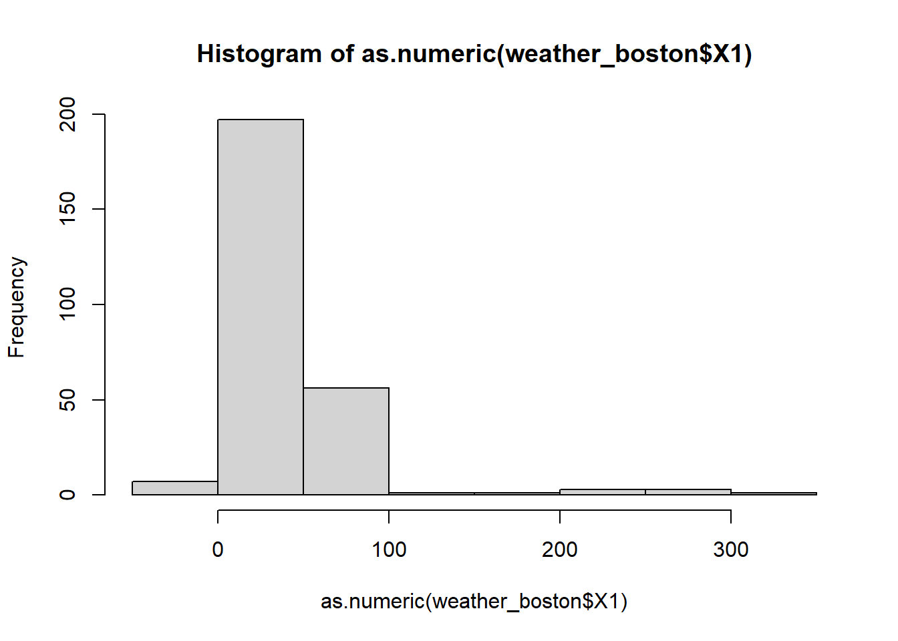
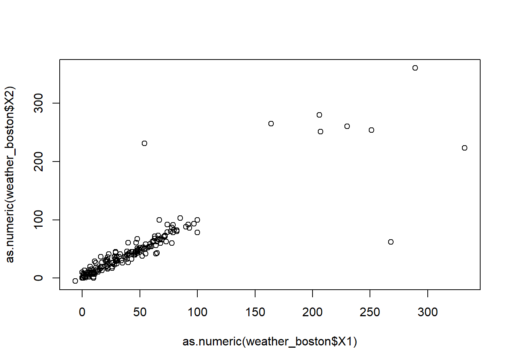
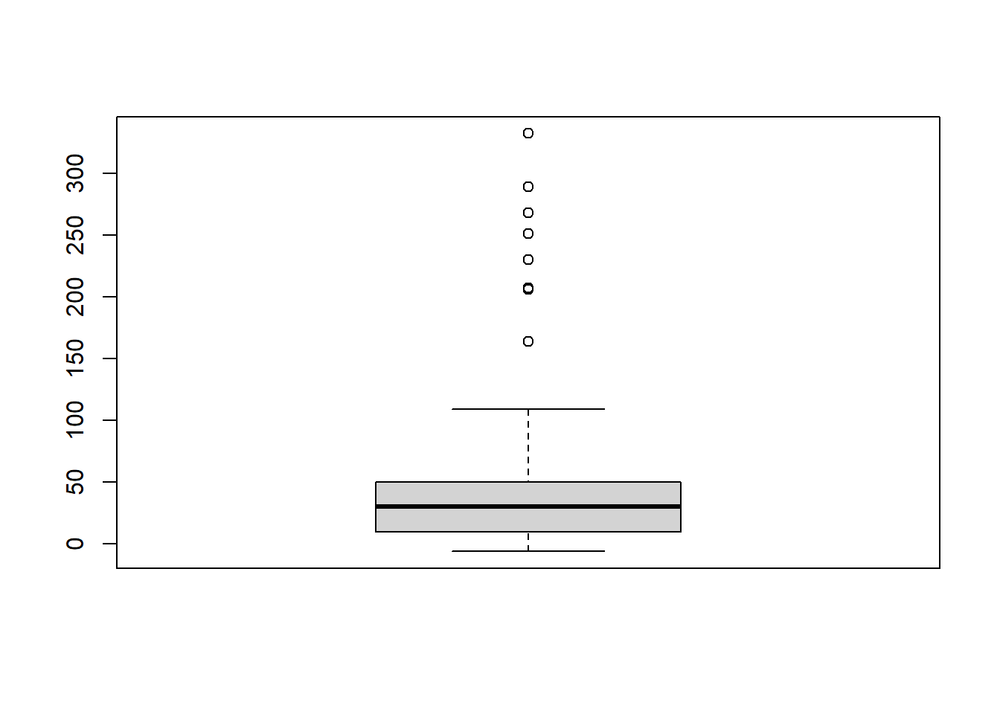
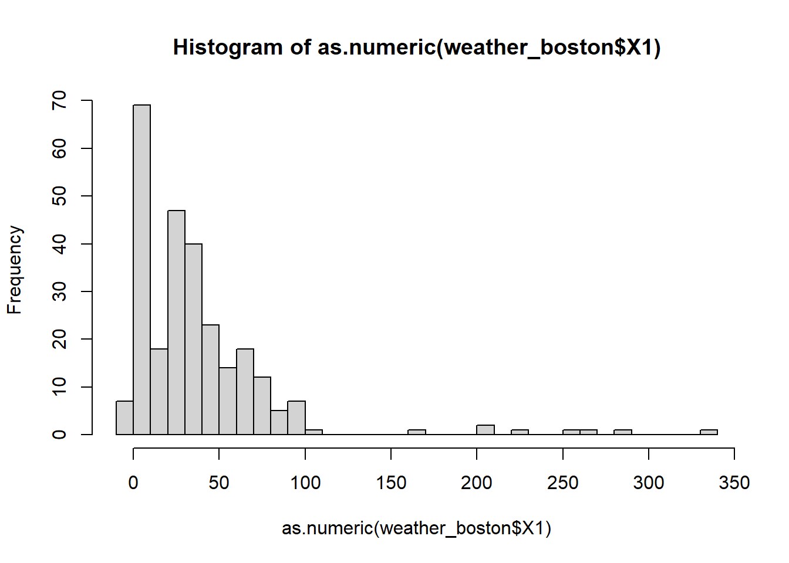

Chapter 12 Data Cleaning I
Guess what, data scientists spend 80% of their time cleaning data! When you are in a real job, the data you get to work with can be very messy. However, we do not typically teach how to clean data in class but provide students with clean data that is ready for analysis. I am compelled to teach you how to clean data, because, again, 80% of the time, we will be cleaning data. You will find the skills of cleaning data will be of great help later in your work. Thus, data cleaning, although may be tedious, will pay off in the near future.
This chapter provides a very basic introduction to cleaning data in R using the data.table, lubridate, and stringr packages. After taking the course you’ll be able to go from raw data to awesome insights as quickly and painlessly as possible!
There are two main characteristics of a clean data: 1). each row represents an observation and each column represents a variable/attribute associated with the observation. 2). The columns are in the right variable mode (e.g., numbers are numeric, date are date not character, categorical variables are factors).
Although this sounds really intuitive and simple, most raw datasets are not like that, potentially due to the way the data are collected.
There are three basic steps to clean a messy data:
exploring raw data to diagnose the places to be cleaned
tidying data to make rows as observations, columns as variables.
preparing data for analysis (converting columns into the right variable type) We will go over each of these steps in this chapter.
Run the code to install the packages (only need to run once):
install.packages("lubridate") # dealing date variable
install.packages("stringr") # dealing strings/character
install.packages("tidyr") # tidying data
install.packages("data.table")Run the code to load the packages into R:
## Warning: package 'tidyr' was built under R version 4.0.5##
## Attaching package: 'tidyr'## The following object is masked from 'package:magrittr':
##
## extractFor the purpose of illustration, we will use a messy, real-world dataset containing an entire year’s worth of weather data from Boston (i.e., “weather_boston.csv”). Among other things, you’ll be presented with variables that contain column names, column names that should be values, numbers coded as character strings, and values that are missing, extreme, and downright erroneous!
First thing first, let’s read the weather_boston.csv data into R.
12.1 Exploring the raw data
It is critical to explore the raw data, understand its structure and diagnose why the data is messy. We can explore the raw data through the following means.
understand the structure of the data
look at the data
visualize the data
12.1.1 Understand the structure of the data
## [1] "data.table" "data.frame"## [1] 286 34## [1] "year" "month" "measure" "X1" "X2" "X3" "X4"
## [8] "X5" "X6" "X7" "X8" "X9" "X10" "X11"
## [15] "X12" "X13" "X14" "X15" "X16" "X17" "X18"
## [22] "X19" "X20" "X21" "X22" "X23" "X24" "X25"
## [29] "X26" "X27" "X28" "X29" "X30" "X31"## Classes 'data.table' and 'data.frame': 286 obs. of 34 variables:
## $ year : int 2014 2014 2014 2014 2014 2014 2014 2014 2014 2014 ...
## $ month : int 12 12 12 12 12 12 12 12 12 12 ...
## $ measure: chr "Max.TemperatureF" "Mean.TemperatureF" "Min.TemperatureF" "Max.Dew.PointF" ...
## $ X1 : chr "64" "52" "39" "46" ...
## $ X2 : chr "42" "38" "33" "40" ...
## $ X3 : chr "51" "44" "37" "49" ...
## $ X4 : chr "43" "37" "30" "24" ...
## $ X5 : chr "42" "34" "26" "37" ...
## $ X6 : chr "45" "42" "38" "45" ...
## $ X7 : chr "38" "30" "21" "36" ...
## $ X8 : chr "29" "24" "18" "28" ...
## $ X9 : chr "49" "39" "29" "49" ...
## $ X10 : chr "48" "43" "38" "45" ...
## $ X11 : chr "39" "36" "32" "37" ...
## $ X12 : chr "39" "35" "31" "28" ...
## $ X13 : chr "42" "37" "32" "28" ...
## $ X14 : chr "45" "39" "33" "29" ...
## $ X15 : chr "42" "37" "32" "33" ...
## $ X16 : chr "44" "40" "35" "42" ...
## $ X17 : chr "49" "45" "41" "46" ...
## $ X18 : chr "44" "40" "36" "34" ...
## $ X19 : chr "37" "33" "29" "25" ...
## $ X20 : chr "36" "32" "27" "30" ...
## $ X21 : chr "36" "33" "30" "30" ...
## $ X22 : chr "44" "39" "33" "39" ...
## $ X23 : chr "47" "45" "42" "45" ...
## $ X24 : chr "46" "44" "41" "46" ...
## $ X25 : chr "59" "52" "44" "58" ...
## $ X26 : chr "50" "44" "37" "31" ...
## $ X27 : chr "52" "45" "38" "34" ...
## $ X28 : chr "52" "46" "40" "42" ...
## $ X29 : chr "41" "36" "30" "26" ...
## $ X30 : chr "30" "26" "22" "10" ...
## $ X31 : chr "30" "25" "20" "8" ...
## - attr(*, ".internal.selfref")=<externalptr>## year month measure X1
## Min. :2014 Min. : 1.000 Length:286 Length:286
## 1st Qu.:2015 1st Qu.: 4.000 Class :character Class :character
## Median :2015 Median : 7.000 Mode :character Mode :character
## Mean :2015 Mean : 6.923
## 3rd Qu.:2015 3rd Qu.:10.000
## Max. :2015 Max. :12.000
## X2 X3 X4 X5
## Length:286 Length:286 Length:286 Length:286
## Class :character Class :character Class :character Class :character
## Mode :character Mode :character Mode :character Mode :character
##
##
##
## X6 X7 X8 X9
## Length:286 Length:286 Length:286 Length:286
## Class :character Class :character Class :character Class :character
## Mode :character Mode :character Mode :character Mode :character
##
##
##
## X10 X11 X12 X13
## Length:286 Length:286 Length:286 Length:286
## Class :character Class :character Class :character Class :character
## Mode :character Mode :character Mode :character Mode :character
##
##
##
## X14 X15 X16 X17
## Length:286 Length:286 Length:286 Length:286
## Class :character Class :character Class :character Class :character
## Mode :character Mode :character Mode :character Mode :character
##
##
##
## X18 X19 X20 X21
## Length:286 Length:286 Length:286 Length:286
## Class :character Class :character Class :character Class :character
## Mode :character Mode :character Mode :character Mode :character
##
##
##
## X22 X23 X24 X25
## Length:286 Length:286 Length:286 Length:286
## Class :character Class :character Class :character Class :character
## Mode :character Mode :character Mode :character Mode :character
##
##
##
## X26 X27 X28 X29
## Length:286 Length:286 Length:286 Length:286
## Class :character Class :character Class :character Class :character
## Mode :character Mode :character Mode :character Mode :character
##
##
##
## X30 X31
## Length:286 Length:286
## Class :character Class :character
## Mode :character Mode :character
##
##
## 12.1.2 Visulize the data in Tabular form
There is no substitute to actually “see” the data. First, let’s see the data in a tabular form.
## year month measure X1 X2 X3 X4 X5 X6 X7 X8 X9 X10 X11 X12 X13 X14
## 1: 2014 12 Max.TemperatureF 64 42 51 43 42 45 38 29 49 48 39 39 42 45
## 2: 2014 12 Mean.TemperatureF 52 38 44 37 34 42 30 24 39 43 36 35 37 39
## 3: 2014 12 Min.TemperatureF 39 33 37 30 26 38 21 18 29 38 32 31 32 33
## 4: 2014 12 Max.Dew.PointF 46 40 49 24 37 45 36 28 49 45 37 28 28 29
## 5: 2014 12 MeanDew.PointF 40 27 42 21 25 40 20 16 41 39 31 27 26 27
## 6: 2014 12 Min.DewpointF 26 17 24 13 12 36 -3 3 28 37 27 25 24 25
## X15 X16 X17 X18 X19 X20 X21 X22 X23 X24 X25 X26 X27 X28 X29 X30 X31
## 1: 42 44 49 44 37 36 36 44 47 46 59 50 52 52 41 30 30
## 2: 37 40 45 40 33 32 33 39 45 44 52 44 45 46 36 26 25
## 3: 32 35 41 36 29 27 30 33 42 41 44 37 38 40 30 22 20
## 4: 33 42 46 34 25 30 30 39 45 46 58 31 34 42 26 10 8
## 5: 29 36 41 30 22 24 27 34 42 44 43 29 31 35 20 4 5
## 6: 27 30 32 26 20 20 25 25 37 41 29 28 29 27 10 -6 1## year month measure X1 X2 X3 X4 X5 X6
## 1: 2014 12 Max.TemperatureF 64 42 51 43 42 45
## 2: 2014 12 Mean.TemperatureF 52 38 44 37 34 42
## 3: 2014 12 Min.TemperatureF 39 33 37 30 26 38
## 4: 2014 12 Max.Dew.PointF 46 40 49 24 37 45
## 5: 2014 12 MeanDew.PointF 40 27 42 21 25 40
## 6: 2014 12 Min.DewpointF 26 17 24 13 12 36
## 7: 2014 12 Max.Humidity 74 92 100 69 85 100
## 8: 2014 12 Mean.Humidity 63 72 79 54 66 93
## 9: 2014 12 Min.Humidity 52 51 57 39 47 85
## 10: 2014 12 Max.Sea.Level.PressureIn 30.45 30.71 30.4 30.56 30.68 30.42
## X7 X8 X9 X10 X11 X12 X13 X14 X15 X16 X17 X18
## 1: 38 29 49 48 39 39 42 45 42 44 49 44
## 2: 30 24 39 43 36 35 37 39 37 40 45 40
## 3: 21 18 29 38 32 31 32 33 32 35 41 36
## 4: 36 28 49 45 37 28 28 29 33 42 46 34
## 5: 20 16 41 39 31 27 26 27 29 36 41 30
## 6: -3 3 28 37 27 25 24 25 27 30 32 26
## 7: 92 92 100 100 92 85 75 82 89 96 100 89
## 8: 61 70 93 95 87 75 65 68 75 85 85 73
## 9: 29 47 86 89 82 64 55 53 60 73 70 57
## 10: 30.69 30.77 30.51 29.58 29.81 29.88 29.86 29.91 30.15 30.17 29.91 29.87
## X19 X20 X21 X22 X23 X24 X25 X26 X27 X28 X29 X30
## 1: 37 36 36 44 47 46 59 50 52 52 41 30
## 2: 33 32 33 39 45 44 52 44 45 46 36 26
## 3: 29 27 30 33 42 41 44 37 38 40 30 22
## 4: 25 30 30 39 45 46 58 31 34 42 26 10
## 5: 22 24 27 34 42 44 43 29 31 35 20 4
## 6: 20 20 25 25 37 41 29 28 29 27 10 -6
## 7: 69 89 85 89 100 100 100 70 70 76 64 50
## 8: 63 79 77 79 91 98 75 60 60 65 51 38
## 9: 56 69 69 69 82 96 49 49 50 53 37 26
## 10: 30.15 30.31 30.37 30.4 30.31 30.13 29.96 30.16 30.22 29.99 30.22 30.36
## X31
## 1: 30
## 2: 25
## 3: 20
## 4: 8
## 5: 5
## 6: 1
## 7: 57
## 8: 44
## 9: 31
## 10: 30.32## year month measure X1 X2 X3 X4 X5 X6 X7 X8 X9 X10 X11 X12 X13
## 1: 2015 12 Mean.Wind.SpeedMPH 6
## 2: 2015 12 Max.Gust.SpeedMPH 17
## 3: 2015 12 PrecipitationIn 0.14
## 4: 2015 12 CloudCover 7
## 5: 2015 12 Events Rain
## 6: 2015 12 WindDirDegrees 109
## X14 X15 X16 X17 X18 X19 X20 X21 X22 X23 X24 X25 X26 X27 X28 X29 X30 X31
## 1:
## 2:
## 3:
## 4:
## 5:
## 6:## year month measure X1 X2 X3 X4 X5 X6 X7 X8 X9 X10 X11 X12
## 1: 2015 12 Max.VisibilityMiles 10
## 2: 2015 12 Mean.VisibilityMiles 8
## 3: 2015 12 Min.VisibilityMiles 1
## 4: 2015 12 Max.Wind.SpeedMPH 15
## 5: 2015 12 Mean.Wind.SpeedMPH 6
## 6: 2015 12 Max.Gust.SpeedMPH 17
## 7: 2015 12 PrecipitationIn 0.14
## 8: 2015 12 CloudCover 7
## 9: 2015 12 Events Rain
## 10: 2015 12 WindDirDegrees 109
## X13 X14 X15 X16 X17 X18 X19 X20 X21 X22 X23 X24 X25 X26 X27 X28 X29 X30 X31
## 1:
## 2:
## 3:
## 4:
## 5:
## 6:
## 7:
## 8:
## 9:
## 10:Among other things, we see that the weather_boston dataset suffers from one of the most common symptoms of messy data: column names are values. In particular, the column names X1-X31 represent days of the month, which should really be values of a new variable called day. As a result, each row is not an individual observation, but a combined observation of 31 days. Also, variables are not orginaized by columns. The measure column indicates that the multiple measure are stacked by rows. We will tidy this data into the correct form later.
12.1.3 Visualize the raw data through charts
Histgoram is a great tool to see the range and distribution of the data. It provides a great way to identify potential outliers in your data.
## Warning in hist(as.numeric(weather_boston$X1)): NAs introduced by coercion
We can also look at the scatter plot between two variable to check their relationship.
## Warning in plot(as.numeric(weather_boston$X1), as.numeric(weather_boston$X2)):
## NAs introduced by coercion## Warning in xy.coords(x, y, xlabel, ylabel, log): NAs introduced by coercion
We can also look at the boxplot
## Warning in boxplot(as.numeric(weather_boston$X1)): NAs introduced by coercion
12.2 Tidying data
What is tidy data? For any statistical analysis or visualization, the data needs to be in the right form: each row represents an observation and each column represents a variable/attribute associated with the observation. Data analyst spend huge amount of time to get data ready in this format. Nevertheless, the tidy data concept is proposed and formalized by Hadley Wickham in the Journal of Statistical Software recently. Here is the link to the paper: https://vita.had.co.nz/papers/tidy-data.pdf
Here is an example of tidy data.
country<-rep(c("United Stat", "Japan", "China"), times=3)
abbr<-rep(c("US", "JP", "CH"), times=3)
year<-rep(c(2017:2019),each=3)
GDP<-c(400,200,290,420,210,310,450,230,320)
unemployrate<-c("4%","3%","2%","4.1%","3.3%","2.5%","3.9%","3.2%","2.9%")
GDP_tidy<-data.table(country,abbr,year,GDP,unemployrate)
GDP_tidy## country abbr year GDP unemployrate
## 1: United Stat US 2017 400 4%
## 2: Japan JP 2017 200 3%
## 3: China CH 2017 290 2%
## 4: United Stat US 2018 420 4.1%
## 5: Japan JP 2018 210 3.3%
## 6: China CH 2018 310 2.5%
## 7: United Stat US 2019 450 3.9%
## 8: Japan JP 2019 230 3.2%
## 9: China CH 2019 320 2.9%The GDP_tidy is an example is a simple tidy data. By name, we know this data is about GDP of country. Each row represents an observation: we observe the GDP and unemployment of a particular country in a particular year. Thus, each column represents one attribute of the observation: which country is observed; in which year it is observed, and what is the observed GDP amount.
Here is an example of non-tidy data.
country<-c("United Stat/US", "Japan/JP", "China/CH")
GDP_2017<-c(400,200,290)
GDP_2018<-c(420,210,310)
GDP_2019<-c(450,230,320)
unemployrate_2017=c("4%", "3%","2%")
unemployrate_2018=c("4.1%", "3.3%","2.5%")
unemployrate_2019=c("3.9%", "3.2%","2.9%")
GDP_messy<-data.table(country,GDP_2017,GDP_2018,GDP_2019,unemployrate_2017,unemployrate_2018,unemployrate_2019)
GDP_messy## country GDP_2017 GDP_2018 GDP_2019 unemployrate_2017
## 1: United Stat/US 400 420 450 4%
## 2: Japan/JP 200 210 230 3%
## 3: China/CH 290 310 320 2%
## unemployrate_2018 unemployrate_2019
## 1: 4.1% 3.9%
## 2: 3.3% 3.2%
## 3: 2.5% 2.9%This is a non-tidy data because the attribute of an observation (i.e., the year when the observation is observed) is represented in the column.
Next, we will use the melt() and dcast() function in data.table package to tidy data. There are some other packages (e.g., tidyr) for this purpose. We choose to use the data.table function for consistence. Also, the data.table is very fast and memory efficient, making it well-suited to handling large data sets.
12.2.1 melt()
A common problem is a dataset where some of the column names are not names of variables, but values of a variable.
country<-c("United Stat/US", "Japan/JP", "China/CH")
abbr<-c("US", "JP", "CH")
GDP_2017<-c(400,200,290)
GDP_2018<-c(420,210,310)
GDP_2019<-c(450,230,320)
GDP_messy<-data.table(country,abbr, GDP_2017,GDP_2018,GDP_2019)
GDP_messy## country abbr GDP_2017 GDP_2018 GDP_2019
## 1: United Stat/US US 400 420 450
## 2: Japan/JP JP 200 210 230
## 3: China/CH CH 290 310 320The dataset GDP_messy from the following code as an example. The column GDP_2017, GDP_2018 and GDP_2019 represent the value of the year when it is observed.
melt() is design to collect the information in those columns name as a new variable.
GDP1<-melt(GDP_messy, id ="country", measure =c("GDP_2017","GDP_2018","GDP_2019"), variable.name = "year", value.name = "GDP")
GDP1## country year GDP
## 1: United Stat/US GDP_2017 400
## 2: Japan/JP GDP_2017 200
## 3: China/CH GDP_2017 290
## 4: United Stat/US GDP_2018 420
## 5: Japan/JP GDP_2018 210
## 6: China/CH GDP_2018 310
## 7: United Stat/US GDP_2019 450
## 8: Japan/JP GDP_2019 230
## 9: China/CH GDP_2019 320The code above collect the colunme name GDP_2017, GDP_2018, GDP_2019 into a new variable (and renamed as year); and put the corresponding value into the value variable (and renamed as GDP). The general format for melt() is as follow: melt( data.table, id= c("“), # id variable for origin data, will be kept in the new data measure = c(”“), # columns to be melt variable.name =”year“, # name of new variable to place original column name value.name =”GDP", # name of new variable to place original column value )
Note that: 1) the melt() function takes only data.table not data.frame as argument; 2) melt() function will return a data.table as a result; 3) the variables not included the id.vars will not be kept in the new data.table.
We can also use pattern argument:
GDP_tidy = melt(GDP_messy, id="country", measure = patterns('GDP_'),variable.name = "year", value.name = "GDP")
GDP_tidy## country year GDP
## 1: United Stat/US GDP_2017 400
## 2: Japan/JP GDP_2017 200
## 3: China/CH GDP_2017 290
## 4: United Stat/US GDP_2018 420
## 5: Japan/JP GDP_2018 210
## 6: China/CH GDP_2018 310
## 7: United Stat/US GDP_2019 450
## 8: Japan/JP GDP_2019 230
## 9: China/CH GDP_2019 320In the above code, instead of specifying the measure =c(“GDP_2017”,“GDP_2018”,“GDP_2019”), which share the same pattern of “GDP_”, we can use measure=patterns(‘GDP_’) to specify these columns.
To clean the data, we need extract the 4-digit year from the year column. This can be done from the following code:
## country year GDP year2
## 1: United Stat/US GDP_2017 400 2017
## 2: Japan/JP GDP_2017 200 2017
## 3: China/CH GDP_2017 290 2017
## 4: United Stat/US GDP_2018 420 2018
## 5: Japan/JP GDP_2018 210 2018
## 6: China/CH GDP_2018 310 2018
## 7: United Stat/US GDP_2019 450 2019
## 8: Japan/JP GDP_2019 230 2019
## 9: China/CH GDP_2019 320 2019str_sub(year,5,9) extract the substring from the character vector year, where the position of the substring is from 5th char to the 9th char.
12.2.2 dcast()
The opposite of melt() is dcast(), which takes key-values pairs and spreads them across multiple columns. This is useful when values in a column should actually be column names (i.e. variables).
Let’s look at one example:
country<-rep(c("United Stat/US", "Japan/JP", "China/CH"), times=6)
measure<-rep(c("GDP","unemployrate"), each=3*3)
year<-rep(c(2017,2018,2019), each=3,times=2)
amount<-c("400","200","290","420","210","310","450","230","320","4%", "3%", "2%","4.1%", "3.3%", "2.5%", "3.9%", "3.2%" ,"2.9%")
GPD_messy=data.table(country,year,measure, amount)
GPD_messy## country year measure amount
## 1: United Stat/US 2017 GDP 400
## 2: Japan/JP 2017 GDP 200
## 3: China/CH 2017 GDP 290
## 4: United Stat/US 2018 GDP 420
## 5: Japan/JP 2018 GDP 210
## 6: China/CH 2018 GDP 310
## 7: United Stat/US 2019 GDP 450
## 8: Japan/JP 2019 GDP 230
## 9: China/CH 2019 GDP 320
## 10: United Stat/US 2017 unemployrate 4%
## 11: Japan/JP 2017 unemployrate 3%
## 12: China/CH 2017 unemployrate 2%
## 13: United Stat/US 2018 unemployrate 4.1%
## 14: Japan/JP 2018 unemployrate 3.3%
## 15: China/CH 2018 unemployrate 2.5%
## 16: United Stat/US 2019 unemployrate 3.9%
## 17: Japan/JP 2019 unemployrate 3.2%
## 18: China/CH 2019 unemployrate 2.9%As see, in GPD_messy, the column “measure” should be variable name: (GDP nd unemployrate are stacked in one column). We need to allocate this column into two columns. The folowing code with dcast() achieves this purpose:
## country year GDP unemployrate
## 1: China/CH 2017 290 2%
## 2: China/CH 2018 310 2.5%
## 3: China/CH 2019 320 2.9%
## 4: Japan/JP 2017 200 3%
## 5: Japan/JP 2018 210 3.3%
## 6: Japan/JP 2019 230 3.2%
## 7: United Stat/US 2017 400 4%
## 8: United Stat/US 2018 420 4.1%
## 9: United Stat/US 2019 450 3.9%In the above code, country+year~measure is called formula. Here it means that each country+year pair will consists a row in the new data.table, the variables in the original “measure” column will be the new columns. value.var=“amount” indicates that the value of the new columns is populated by the value in the orignal “amount” column.
The general syntax for dcast() function is as below: dcast(data, formula, value.var).
12.3 Preparing data for analysis
Now that we have tidy the data, we need to futher clean it so that it is ready for statistical analysis or visualization. The most important task in this step is to make sure each column is in the right format (i.e., numbers are numeric, date is represented in date, categorical variables are represented in factors, characters are characters, logical are logical)
12.3.1 Type conversions
It is often necessary to change, or coerce, the way that variables in a dataset are stored. This could be because of the way they were read into R (with read.csv(), for example) or perhaps the function you are using to analyze the data requires variables to be coded a certain way.
The common type conversions in R include:
## [1] "2016"## [1] 1## [1] level A level B leval A leval A
## Levels: leval A level A level B## [1] FALSEOnly certain coercions are allowed, but the rules for what works are generally pretty intuitive. For example, trying to convert a character string to a number gives a missing value NA:
## Warning: NAs introduced by coercion## [1] NAThere are a few less intuitive results. For example, under the hood, the logical values TRUE and FALSE are coded as 1 and 0, respectively. Therefore, as.logical(1) returns TRUE and as.numeric(TRUE) returns 1.
## [1] TRUE## [1] 112.3.2 Working with dates
Dates can be a challenge to work with in any programming language, but thanks to the lubridate package, working with dates in R isn’t so bad. Since this module is about cleaning data, we only cover the most basic functions from lubridate to help us standardize the format of dates and times in our data. But this will cover most of the situations you face in real world.
These functions combine the letters y, m, d, h, m, s, which stand for year, month, day, hour, minute, and second, respectively. The order of the letters in the function should match the order of the date/time you are attempting to read in, although not all combinations are valid. Notice that the functions are “smart” in that they are capable of parsing multiple formats.
## [1] "2015-08-25"## [1] "Date"## [1] "2015-08-25"## [1] "2015-08-25"## [1] "13H 33M 9S"## [1] "2015-08-25 13:33:09 UTC"As see, the these functions from lubridate package is quite smart to understand the general date in various form and return the standardized date.
12.3.3 String (character) manipulation
Here we introduce you to string manipulation in R. In many situation we have to deal with textual data, e.g., customer review, address, tweets, ….
We will use the stringr package for string manipulation, which is written Hadley Wickham. Base R contains many functions to work with strings but we’ll avoid them because they can be inconsistent, which makes them hard to remember. Instead we’ll use functions from stringr. These have more intuitive names, and all start with str_.
Examine the length of a string:
## [1] 1 12 NACombine two or more strings (we have used paste() in base R for this):
## [1] "Leon Xu"## [1] "2019-Mar-24"## [1] "https://www.zillow.com/page1" "https://www.zillow.com/page2"
## [3] "https://www.zillow.com/page3"subsetting strings: you can extract parts of a string use str_sub(). Subsetting a string is the most used operations to deal with strings. E.g., to extract zip from address. It takes a general form like this: str_sub(string, start, end)
address="7313 Sherman Street, Licoln, NE 68506"
len=str_length(address)
str_sub(address, len-4, len)## [1] "68506"str_replace() and str_replace_all() allow you to replace matches with new strings. The general syntax is: str_replace(string, pattern, replacement)
## [1] "Apple?" "peAr4" "bAnana"## [1] "Apple?" "peAr4" "bAnAnA"Trim all leading and trailing whitespace
## [1] "Filip" "Nick" "Jonathan"Pad these strings with leading zeros
## [1] "023485W" "8823453Q" "000994Z"tolower() turn all letter in string into lower case.
## [1] "university of nebraska"toupper() turn all letter in string into upper case.
## [1] "UNIVERSITY OF NEBRASKA"12.4 Missing and special values in R
Missing values in R should be represented by NA.
If missing values are properly coded as NA, the is.na() function will help you find them.
Unfortunately you will not always be so lucky. Before you can deal with missing values, you have to find them in the data. Otherwise, if your dataset is too big to just look at the whole thing, you may need to try searching for some of the usual suspects like "“,”#N/A", etc to identify the missing value.
Let’s examine the example to see the missing values.
## x1 x2
## 1: 2 NA
## 2: 5 23
## 3: NA 9
## 4: 9 NAis.na() return for each element in the data.table, it returns TRUE/FALSE to indicate whether the data is missing.
## x1 x2
## [1,] FALSE TRUE
## [2,] FALSE FALSE
## [3,] TRUE FALSE
## [4,] FALSE TRUE# since TRUE is stored as 1 and FALSE is stored as 0, we can use sum() to count to total number of missing value
sum(is.na(x))## [1] 3## [1] 3## [1] 1 4## [1] FALSE TRUE FALSE FALSEFor each row in x, complete.cases(x) returns TRUE/FALSE if the corresponding row has’t/has missing value.
## x1 x2
## 1: 5 23na.omit() remove all rows that contain missing value. The resulting data will have no missing value.
12.5 Outliers, obvious error and missing value
When dealing with strange values in your data, you often must decide whether they are just extreme or actually error. Extreme values show up all over the place, but you, the data analyst, must figure out when they are plausible and when they are not.
One quick way to see the outlier is to visulize your data. The summary() and hist() and boxplot() are useful for this purpose.
## Warning in summary(as.numeric(weather_boston$X1)): NAs introduced by coercion## Min. 1st Qu. Median Mean 3rd Qu. Max. NA's
## -6.00 10.00 29.99 38.70 50.00 332.00 17## Warning in hist(as.numeric(weather_boston$X1), breaks = 30): NAs introduced by
## coercion
Another useful way of looking at strange values is with boxplots. Simply put, boxplots draw a box around the middle 50% of values for a given variable, with a bolded horizontal line drawn at the median. Values that fall far from the bulk of the data points (i.e. outliers) are denoted by open circles.
## Warning in boxplot(as.numeric(weather_boston$X1)): NAs introduced by coercion12.6 Summary
80% of the data scientist’s time is to clean data.
Three steps to clean data: 1) exploring raw data to for diagnosis; 2) tidy the data using melt() and dcast() 3) convert columns into the right variable type.
A tidy data means each row represents an observation, and each column represents a variable (attribute) about an observation. When columns names contains variable information, we should use melt(); when multiple variables are stacked into rows, we should use dcast().
Convert each column into the correct variable types using as.character(), as.numeric(), as.factor(), as.logical().
Use lubridate and stringr package to work with date and string variables.